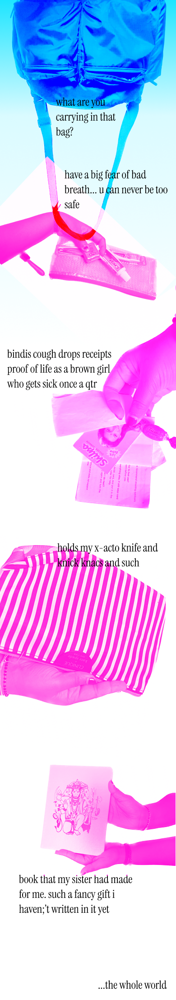

after receiving feedback on my concept, i wanted to add an additional dimension of information in the site by adding interactive text. by having the text move around & "shake" out of the bag, there is additional interaction within the scroll of the site. the user also learns more about the intention behind each item in the bag. another addition i found interesting is possibly having the weight of the bag included so that the user can be quantify the weight of the item.
